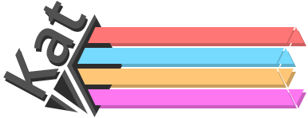
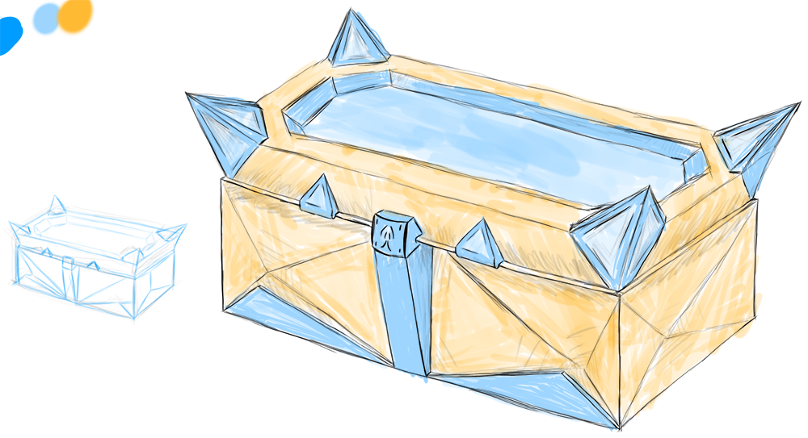
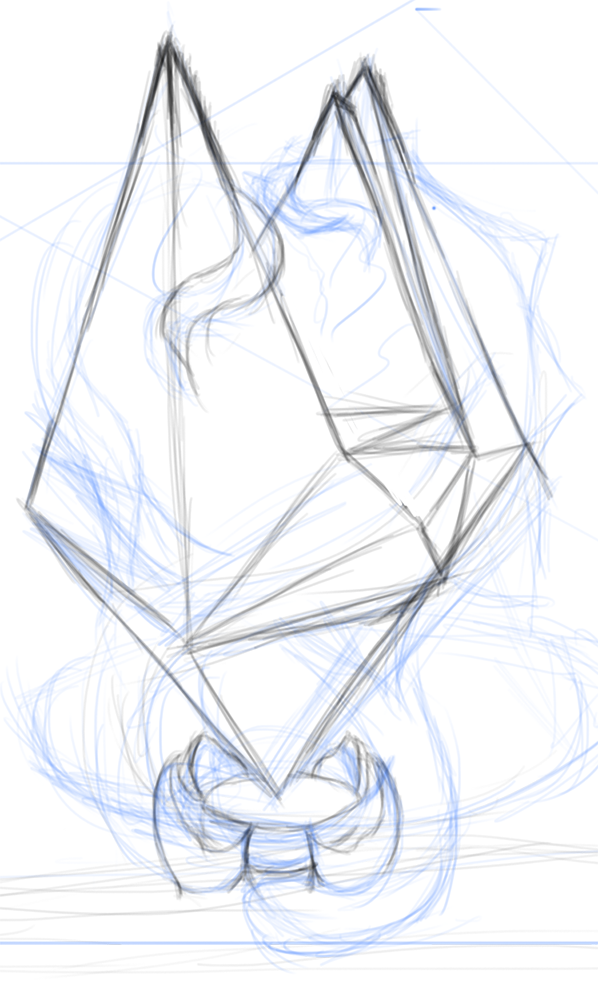

CG News! - Feb 25th Update Post!
February 28, 2018
Michael here with another Patreon Update! I've started working on Crystal Grimoire : Heart of the Goddess again this week so I have some news on that, plus more incoming video news!
I'm starting to do Sketches again, so I'll try and upload them to my DeviantArt when they're 'done' or whatever. Release Schedule will be slightly modified from here on out as well, I was originally going to be releasing let's plays every other day but no one is even watching them so... yeah, just going back to plan A and releasing them when I got nothing else. I enjoy making them so I'll keep making them but releases will be staggered until they get viewership.
Gaming news has been pretty slow and I picked up more shifts at my day job than I expected so I really don't have much to report here in terms of currently recording backlog stuffs. That said tho, lots of 'new' games I've wanted for a while are coming to PC this next and following week so expect to see those! This includes Neptunia 4GO, FF15, Poyo Tetris, and Senran Beach Splash, so expect PC release overviews and possibly reviews soon! Also last week I got my sister to record some let's play stuffs and they turned out really entertaining, although, as I said, no one is watching them so whatever.. >.>
Last week I started working on CG:HotG again, and it feels pretty great!~ I didn't get back into UE4 yet, but instead worked on some concepts and planning, as well as worked on some character designs. I'm not ready to show characters, but here's some other sketches...

UI Status Bar Concept : I'm currently working on some UI design elements, this concept would have everything in Flat colors to contrast with the current stylistic choices. Should also be easy to read (granted, I'll need to make optional text). I'll be using a lot of bright, yet faded colors.

The Meow-Chest : This'll be special chests found through-out the 'open' world which will give small unique rewards. (Rewards/mechanics undecided)

The Heart Crystal : Simple sketch of the world's Heart Crystals (Important to the lore). These will sit in the center of towns and 'safe' areas.
My skyrim is set-up to mod again but I didn't get to it this week. Next week's schedule is pretty full as well so it may be a while.